问题求解（三） Open Topic 7 笔记
OT：距离索引（Distance Oracle）是一种用于查询精确或近似距离的数据结构，请调研至少1种精确距离索引和1种近似距离索引，讨论适用场景，结合例子介绍索引构造算法和距离查询算法的设计与分析。
Distance Oracle——空间与时间的权衡
简介
未加说明的定义见 [1] (Sommer, 2014)。
Distance oracle 是一种距离 stretch，空间 space 和单次查询时间 query time 的权衡的艺术。
适用于一般无向非负权图的 stretch < 2 的 DO
DO 的历史发现
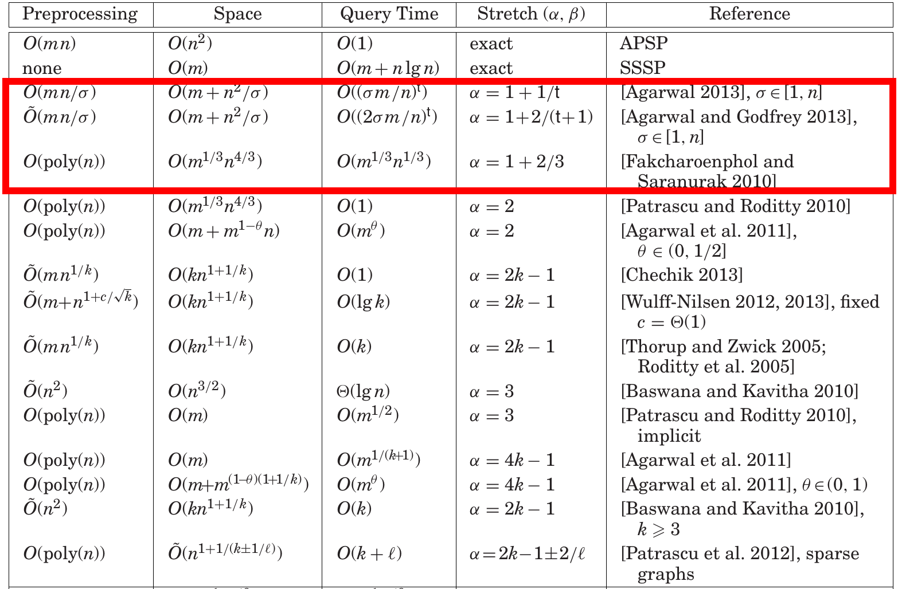
论文贡献
[2] (Agarwal, 2014) 提供了三种满足 stretch \(\alpha\in(1, 2]\) 的 DO。
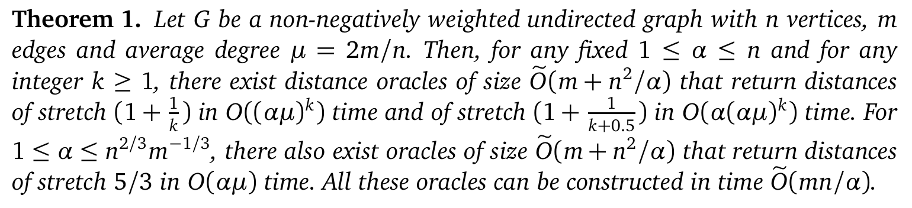
我们主要讨论第一个成果：
Result: 对于平均度为 \(\mu=2m/n\) 的图，对任意 \(1\le \alpha \le n\)，存在 stretch 为 \(O(1+1/k)\)，询问时间 \(T=O((\alpha \mu)^k)\)，空间为 \(S=O(m+n^2/\alpha)\) 的 DO。
约束方程：
\[ S\times T^{1/k}=O(n^2) \]
主要思想
经典的 landmark 法：选一个 landmark 集 \(L\)，对所有点存储到它们的距离。
合理地选择多级 landmark，使得估计距离 \(\delta(s, t)\) 和实际距离的误差尽量小。
和 Agarwal 的之前的成果相比：创新性地使用了双向方法来处理询问。
正是由于双向的优化，在不影响 space 和 construction time 的前提下，query time 得到了大幅优化：
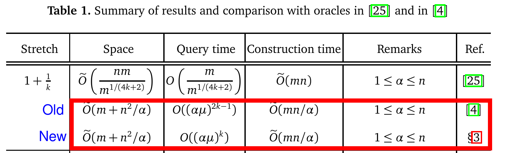
图的结构性预处理 - degree bounded
Theorem: 任何 \(n\) 点 \(m\) 边的图都可以转化为不超过 \(2n\) 点，所有点度数不超过 \(\lceil \mu + 2\rceil\) 的图。（\(\mu\) 是原图的平均度数，为 \(2m/n\)）。
Construction: 在新图 \(G'\) 中，将所有点 \(u\) 转化为 \(t_u=\lceil \deg(u)/\mu\rceil\) 个点 \(u_1, u_2, \cdots, u_{t_u}\)。将原图中 \(u\) 的邻点分成 \(t_u\) 组，每组不超过 \(\mu\) 个，在新图中连到这 \(t_u\) 个点上。最后将这 \(t_u\) 个点在新图中用零边连成链。
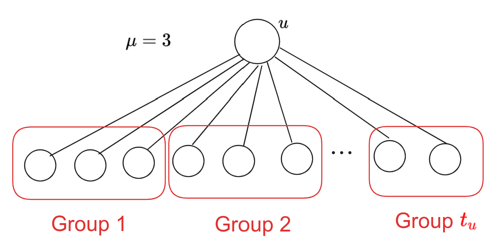
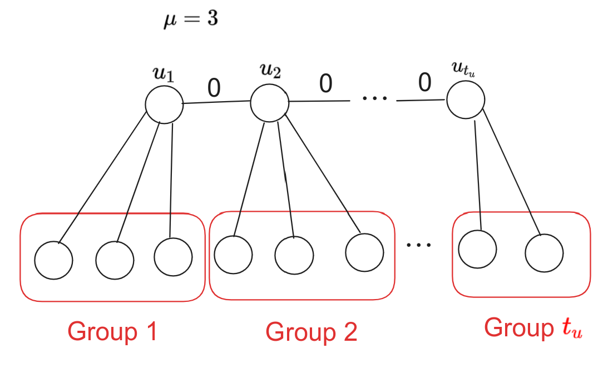
基础定义
若选定了 landmark 集 \(L\)，则对于任意一点 \(v\in V\)：
\(l(v)\)：距离 \(v\) 最近的 \(L\) 中顶点；\(r_v\)：\(v\) 和 \(l(v)\) 之间的距离。
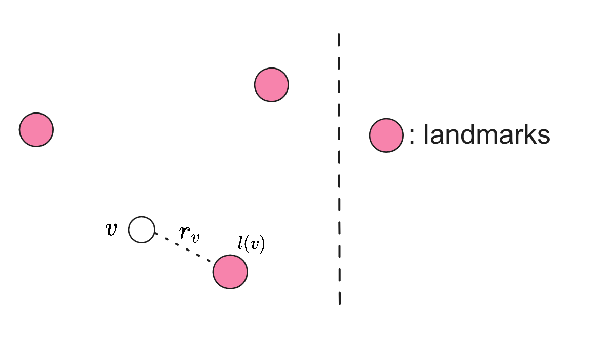
\(B(v)\)：所有到 \(v\) 距离小于 \(r(v)\) 的点的集合。
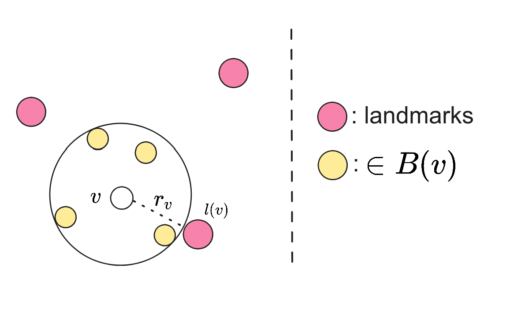
\(B^*(v)\)：在 \(B(v)\) 中或与 \(B(v)\) 中顶点相邻的点的集合。
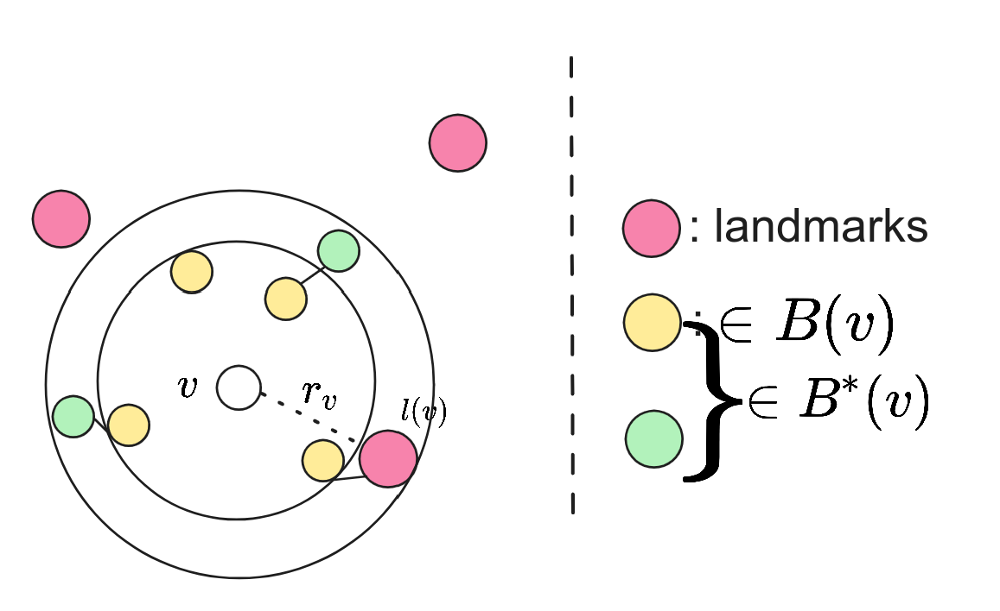
迭代定义：
\[ \Gamma_i^*(v)=\bigcup_{w\in \Gamma^*_{i-1}(v)} B^*(w);\quad \Gamma_i(v)=\bigcup_{w\in \Gamma^*_{i-1}(v)} B(w) \] 且 \(\Gamma_0^*(v)=v, \Gamma_0(v)=\varnothing\).
landmark 集 \(L\) 选取
Theorem: 对于最大度 \(\Delta(G)=\mu\) 的图 \(G\)，对任意 \(1\le \alpha\le n\)，存在 landmark 集 \(L\) 大小为 \(\tilde O(n/\alpha)\)，满足对任意 \(v\in V\)，\(|B(v)|=O(\alpha)\) 从而 \(|B^*(v)|=O(\alpha\mu)\), WHP。
证明：[4] (Alon & Spencer, 2016).
算法预处理
对每个点 \(v\)，使用一个哈希表存储到所有 \(|L|=\tilde O(n/\alpha)\) 个 landmark 的距离，以及 \(l(v)\) 和 \(r_v\)。
每个点使用 Perfect hashing，空间为 \(\tilde O(n/\alpha)\)。故算法总空间 \(\tilde O(m+n^2/\alpha)\)。
算法主过程
对于 \(s\) 和 \(t\) 的查询，分为三部分。(Candidate distance 意为，只从 e.g. \(\Gamma_k^*(s)\) 内部更新的距离)
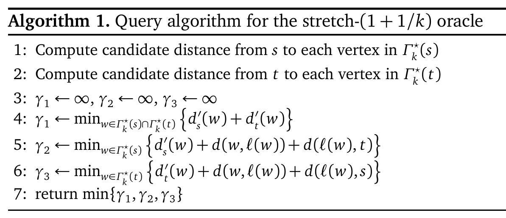
\(s\) 到 \(t\) 的最短路
在 \(s\) 到 \(t\) 的最短路中，我们考虑 \(\Gamma^*_i\) 的递归表现：
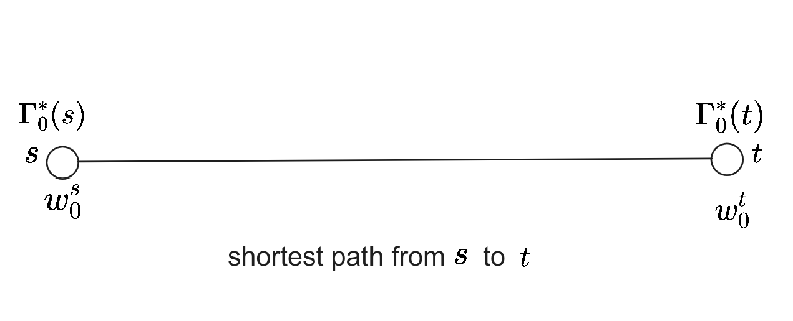
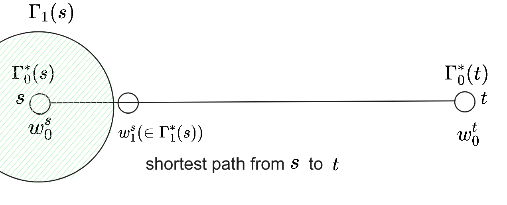
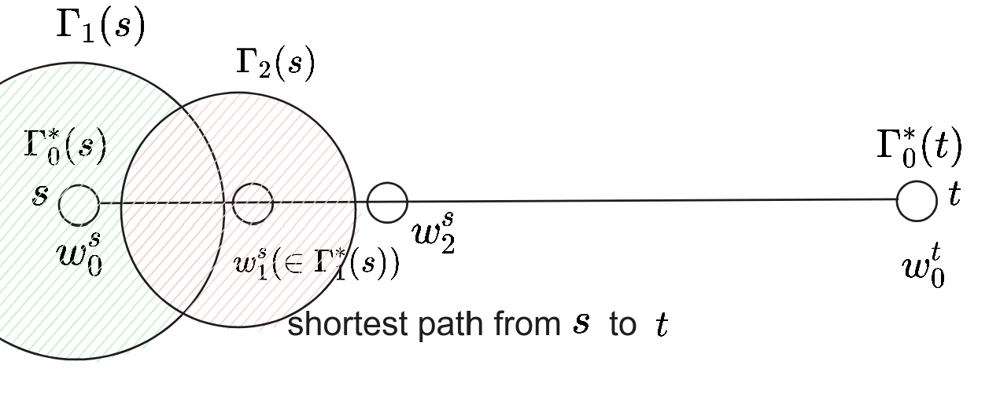
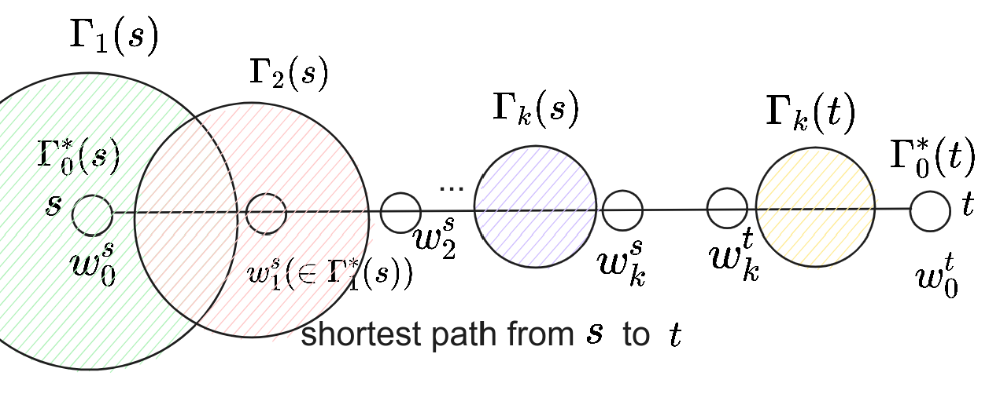
以下性质对于 \(s\) 和 \(t\) 是对称的，故只证 \(s\).
Property 1. 在 Query 的 1.2. 行后，可以得出所有 \(s\) 到 \(w_j^s(0\le j\le k)\) 的距离，也就是求得的 Candidate distance。
Property 2. 设 \(r^s\) 是 \(\min_{0\le j<k}r_{w^s_j}\)，则 \(d(s, w_i^s)\ge i\cdot r^s\)。
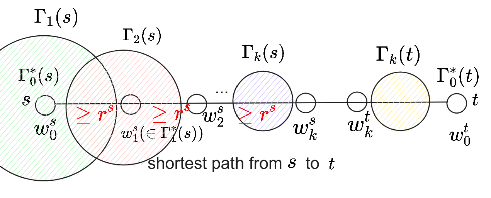
Property 3. 若 \(w_k^t\notin \Gamma^*_k(s)\)（即两向的迭代不交），则 \(d(s, t)\ge 2k\min\lbrace r^s, r^t\rbrace\).
Property 4. query 算法得到的估计距离 \(\delta(s, t)\le d(s, t)+2\min\lbrace r^s, r^t\rbrace\).
- 这是因为第 5. 行使用更新的 \(d'_s(w)+d(w, l(w))+d(l(w), t)\le d(s, t)+2r^s\)，\(w\) 选择使得 \(r_{w^s_j}\) 取得 \(r^s\) 的 \(w^s_j\)：
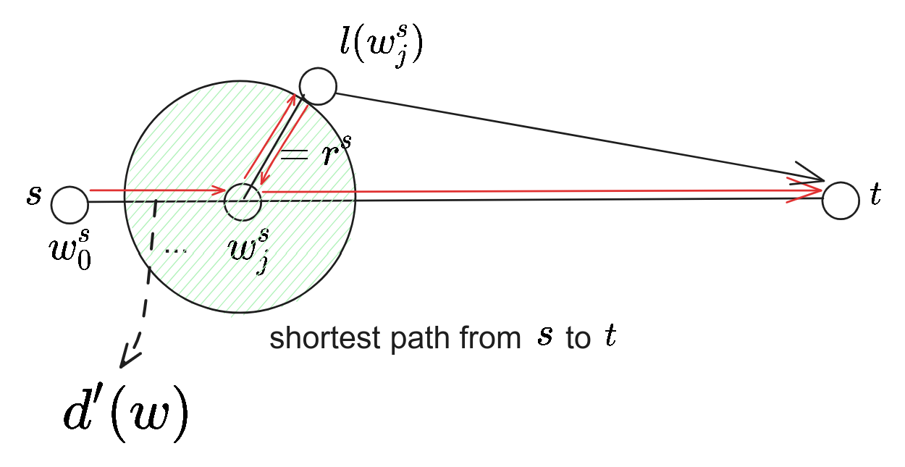
stretch 分析
- 当 \(w_k^t\in \Gamma_k^*(s)\) 时，可以得到 \(\delta(s, t)=d(s, t)\)，此时得到准确值。
- 当 \(w_k^t\notin \Gamma_k^*(s)\) 时，由 Property 3. 有 \(d(s, t)\ge 2k\min\lbrace r^s, r^t\rbrace\)；由 Property 4. 有 \(\delta(s, t)\le d(s, t)+2\min\lbrace r^s, r^t\rbrace\)。从而
\[ \delta(s, t)\le d(s, t)+2\min\lbrace r^s, r^t\rbrace \le d(s, t)+2\cdot d(s, t)/(2k). \]
进而
\[ \dfrac{\delta(s, t)}{d(s, t)}\le 1+1/k. \]
即 stretch 为 \(1+1/k\).
由上知，该算法空间为 \(\tilde O(m+n^2/\alpha)\)。由于每次 query 要进行 \(O(|\Gamma^*_k|)\) 范围的计算 Cadidate distance 和枚举，而每个点 \(v\) 的 \(|B^*(v)|=O(\alpha\mu)\)，故最终单次询问复杂度为 \(O((\alpha\mu)^k)\).
平面图的一种 Exact DO
概述
[3] (Djidjev, 1996) 给出了平面图（确切地说，\(O(\sqrt n)\) 分离图）上的一种 construction time \(O(S)\), space \(S=O(S)\), query time \(T=O(n^2/S)\) 的 DO。
满足约束
\[ S\times T=O(n^2). \]
以下只展示 \(S=O(n\sqrt n)\)，\(T=O(\sqrt n)\) 的构建方法，其余范围是它的推论。
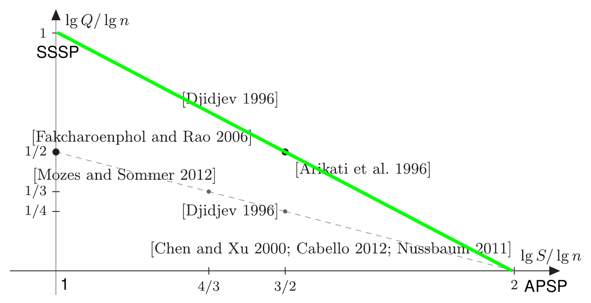
\(f(n)\) 分离性
称一类图 \(\mathcal G_{f(n)}\) 具有 \(f(n)\) 分离性，即对 \(G\in \mathcal G_{f(n)}\)，存在大小为 \(O(f(n))\) 的 \(C\)，使得 \(G-C\) 的每个连通分支的大小均不超过 \(\alpha n\)，其中 \(\alpha<1\) 为常数。
Theorem(平面分离定理): 平面图 \(\subseteq \mathcal G_{\sqrt n}\)。
预处理
通过递归构造 \(O(\sqrt n)\) seperator，形成一棵 \(O(\log n)\) 深度的树。
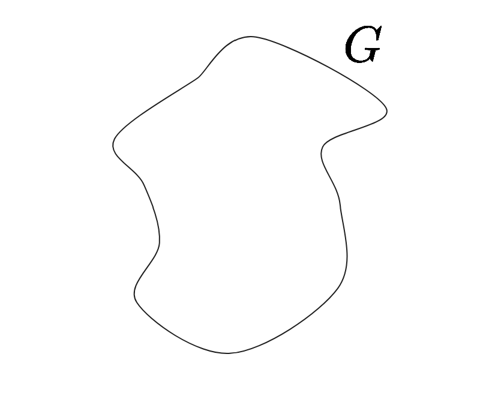
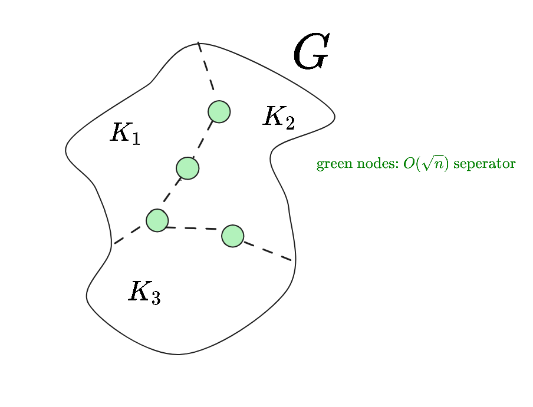
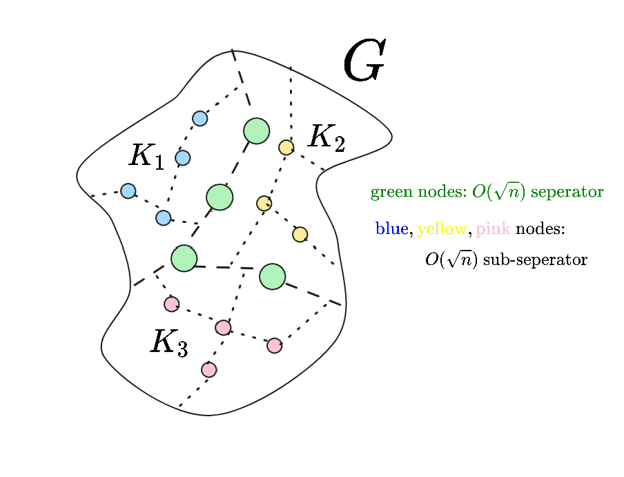
转化为树，树中的每个顶点代表原图中一个 \(O(\sqrt n)\) seperator，即为：
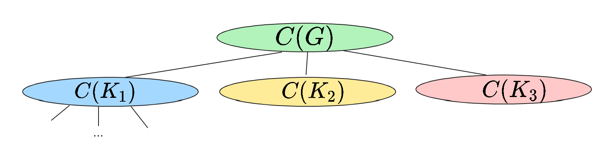
再预处理：树中每个顶点（即一个 \(O(\sqrt n)\) seperator \(C(G_x)\)）代表的原图中每个顶点计算到 \(G_x\) 中的每个顶点的距离）。
- 使用 [5] (Henzinger et.al, 1997) 的方法可以在平面图中 \(O(|G|)\) 进行 SSSP。
- 计算一个大小为 \(n_x\) 的\(C(G_x)\) 的信息需要 \(O(n_x\sqrt {n_x})\) 的预处理时间和算法总空间。
预处理时间/算法总空间共计
\[ f(n)=\sum_{i}f(n_i)+O(n\sqrt {n}), \text{where } \sum_{i}n_i=n, n_i\le \alpha n. \]
解得 \(f(n)=O(n\sqrt n)\)。故预处理时间，空间均为 \(O(n\sqrt n)\)。
询问
对于 \(u, v\)，找到在树中它们所在的顶点，设它们的 LCA 为 \(C(G_l)\)。输出答案为
\[ d(u, v)=\min_{x\in C(G_l)} \lbrace d(u, x) + d(x, v)\rbrace. \]
这是因为 \(C(G_l)\) 中一定有顶点在 \(u, v\) 的最短路上（它是割集）。单次询问时间 \(O(\sqrt n)\)。
总结
于是，我们得到了平面图（或一般地，\(\mathcal G_{\sqrt n}\)）预处理和空间均为 \(O(n\sqrt n)\)，单次询问时间为 \(O(\sqrt n)\) 的 DO。
参考文献
[1] Sommer, C. (2014). Shortest-path queries in static networks. ACM Computing Surveys (CSUR), 46(4), 1-31.
[2] Agarwal, R. (2014). The space-stretch-time tradeoff in distance oracles. In Algorithms-ESA 2014: 22th Annual European Symposium, Wroclaw, Poland, September 8-10, 2014. Proceedings 21 (pp. 49-60). Springer Berlin Heidelberg.
[3] Djidjev, H. N. (1996, June). Efficient algorithms for shortest path queries in planar digraphs. In International Workshop on Graph-Theoretic Concepts in Computer Science (pp. 151-165). Berlin, Heidelberg: Springer Berlin Heidelberg.
[4] Alon, N., & Spencer, J. H. (2016). The probabilistic method. John Wiley & Sons.
[5] Henzinger, M. R., Klein, P., Rao, S., & Subramanian, S. (1997). Faster shortest-path algorithms for planar graphs. journal of computer and system sciences, 55(1), 3-23.